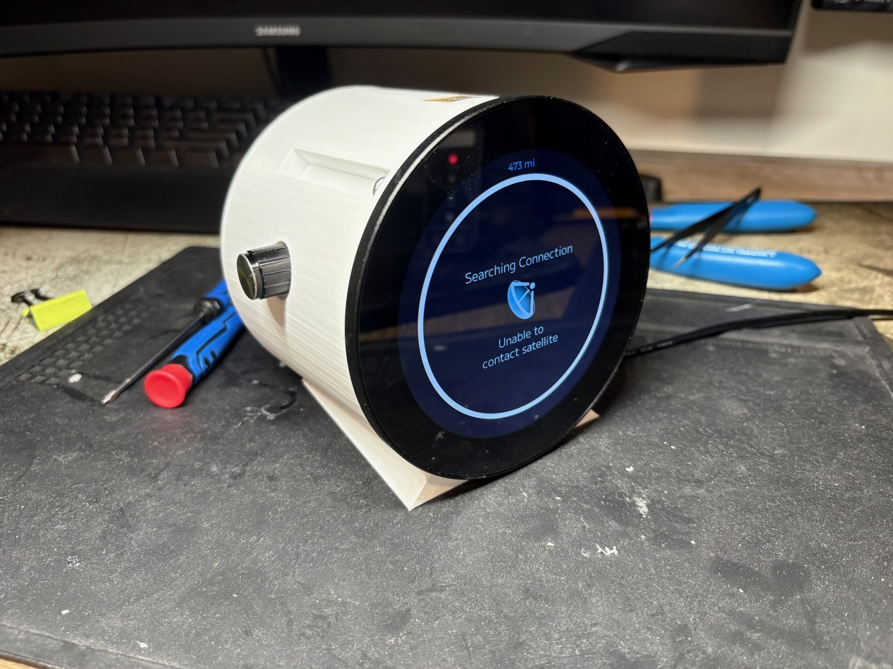
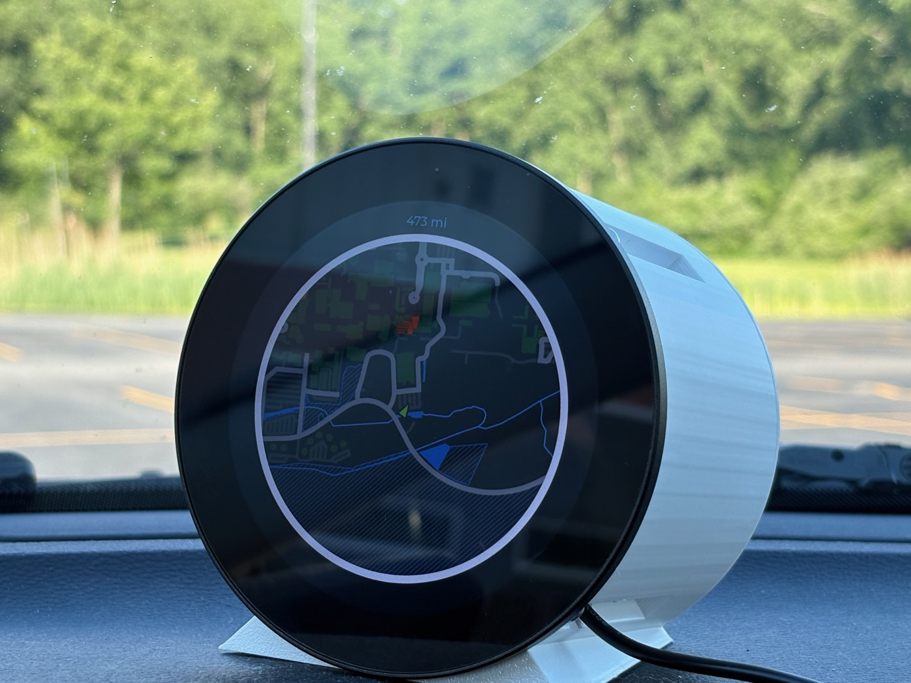

A real-time GPS minimap display built on an ESP32-P4 running ESP-IDF. Map tiles are stored as .bin
files on a microSD card and rendered live using LVGL onto a 3.4in display from WaveShare.
Originally inspired by GarageTinkering's video and project,
I optimized the graphics pipeline for a larger display and added a potentiometer for hardware brightness control,
plus a persistent odometer that survives power cycles by writing to the SD card.
The photos below document my final design and assembled project (because I forgot to take photos of the build process).

Here is a side view of my final design. As you can see, I 3D-printed a custom case for it, although it went through a couple (8) revisions before I was happy with it. You can also see the potentiometer on the side to control screen brightness, and a small cutout on top for the GPS antenna to sit in, for better signal.

The finished device! A working real-time GPS minimap you can take anywhere.